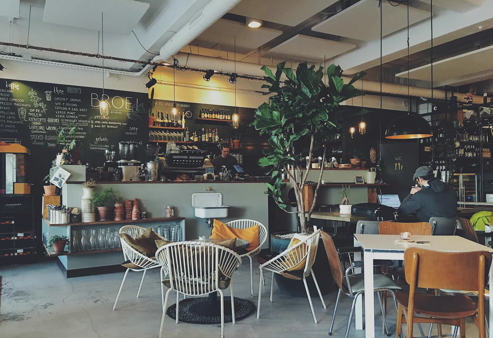
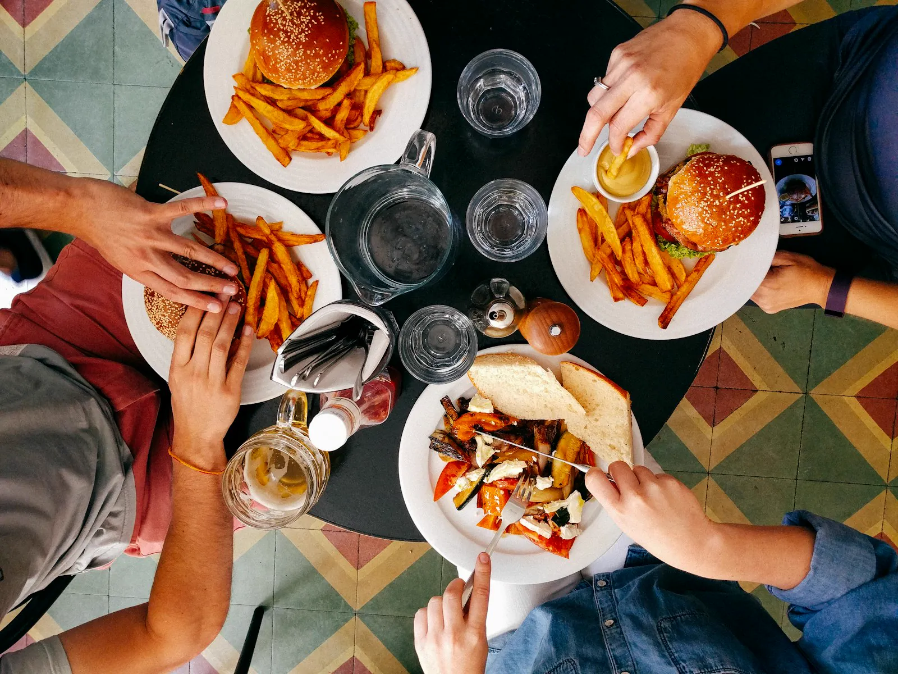
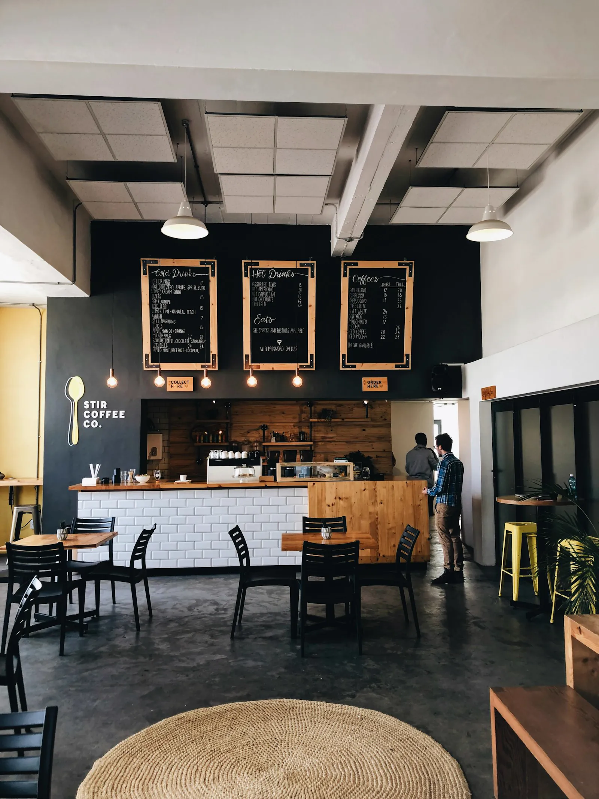
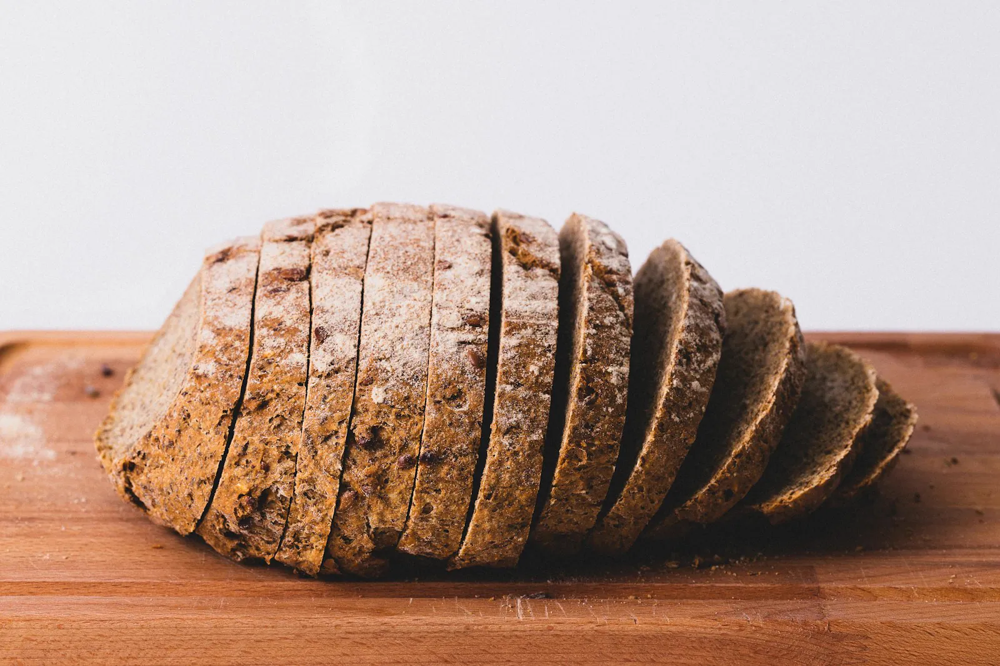
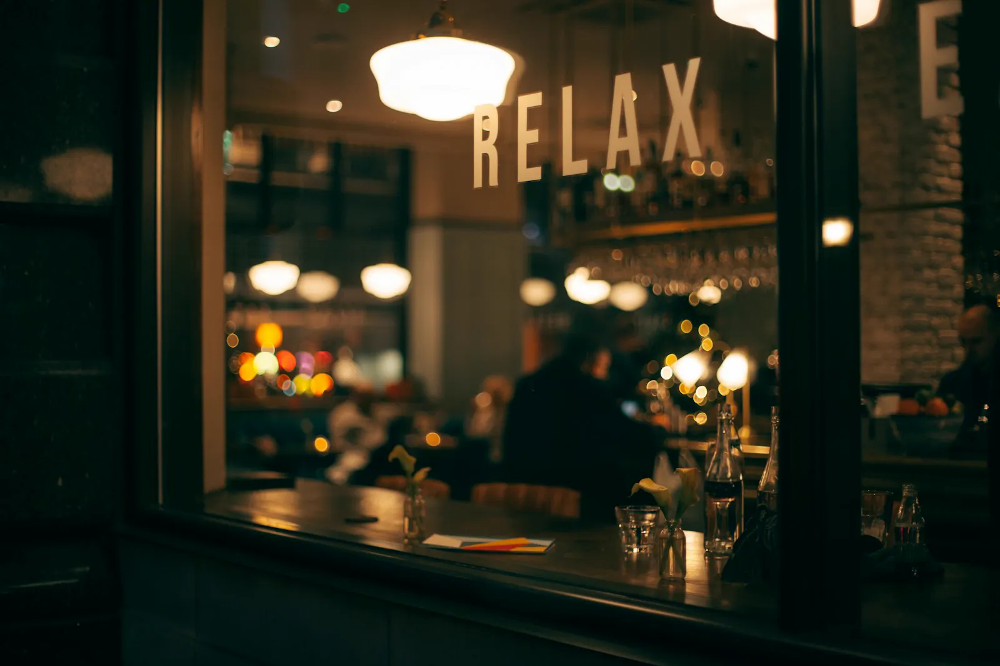

Galería
El día a día de Muliateko Giroa
Tostadas y café de buena mañana, raciones para compartir, pastelería casera y una terraza para disfrutar. Pulsa cualquier imagen para verla en grande.









¿Quieres ver más?
Síguenos en Instagram
Publicamos cada día nuestras novedades, platos y rincones. Más de 1.900 personas ya nos siguen.